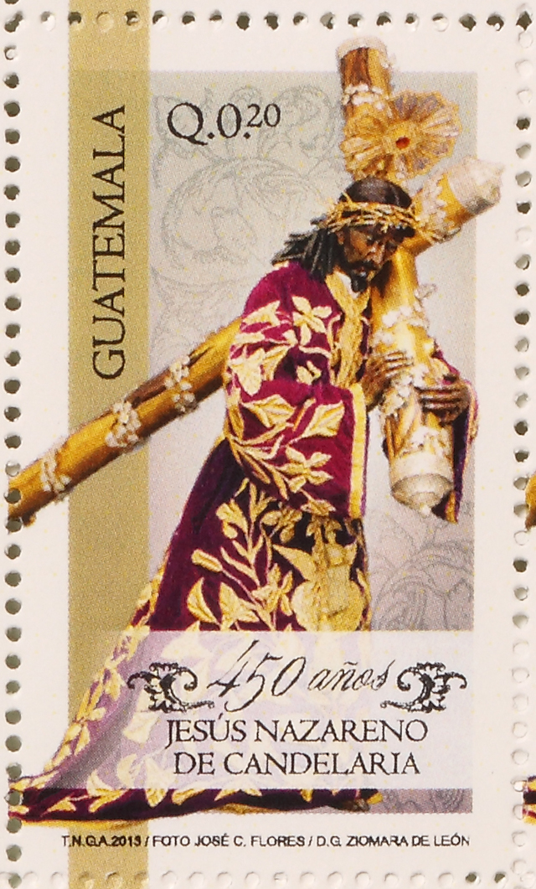

- 


El pasado viernes 7 de febrero en las instalaciones del correo de Guatemala se llevo acabo la presentación de las "estampas conmemorativas" dedicadas a Jesus de Candelaria por sus 450 años celebrados en el 2013, dicha colección las puede conseguir en "el correo" de Guatemala.